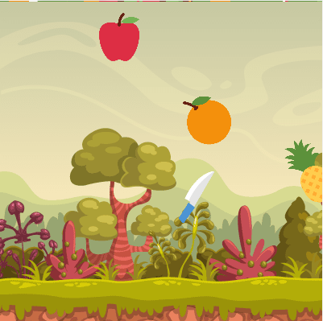

Projetos Básicos e Iniciais
⮜Este é um pequeno jogo onde você possui uma quantidade de vida e deve coletar os corações que aparecem na tela, enquanto desvia dos outros astronautas. O game é inspirado no jogo "Among Us"
Acessar
Esse é outro jogo. Você deverá mover seu mouse até as frutas para cortá-las. O cursor será substituído por uma faca. O jogo é inspirado no jogo "Fruit Ninja"
Acessar
Neste app você poderá definir o peso de um objeto no planeta Terra e verificar seu peso em outros planetas.
Acessar